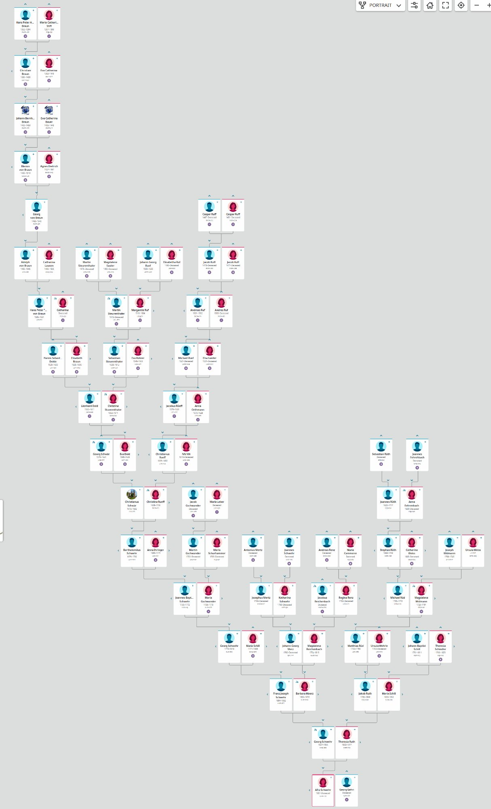
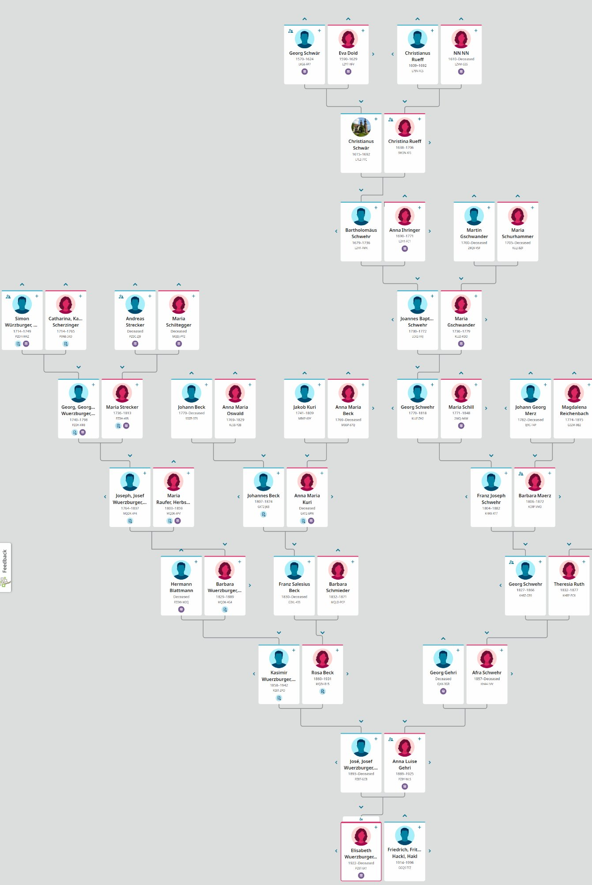

As Famílias Desta História
Quando Gilberto Hackl, nascido em São Paulo em 1982, começou a rastrear as origens de sua família, esperava encontrar duas linhagens: seu avô Friedrich Hackl da Áustria e sua avó Elisabeth Würzburger da Alemanha. O que encontrou foi uma teia de famílias que se estendia por quase setecentos anos, cada nome um fio em uma tapeçaria que abrange toda a Europa Central.
Pelo lado Würzburger, a trilha leva de volta pelas vilas da Floresta Negra no Glottertal e Heuweiler, através de uma sucessão de famílias cujos nomes ainda ecoam naqueles vales hoje: Würzburger de Föhrental (desde os anos 1710), Gehri de Wildtal, Schwehr de Heuweiler (desde os anos 1680), Gschwander de Glottertal, Schill, Merz, Reichenbach, Beck, Rüd/Ruth de Simonswald, Wehrle, Widmann, Ihringer, Strecker, Schurhammer, Blattmann e Raufer. Mais para trás, a linhagem Schwehr passa pelas terras monásticas de Sankt Peter como Schwär, depois como Rueff/Ruff, Dold e Braun/von Braun, alcançando a cidade da abadia beneditina de Ottobeuren no ano de 1352.
Pelo lado Hackl, a trilha leva às colinas vinícolas do sudeste da Estíria, Áustria: Hackl/Hakl de Sankt Anna am Aigen e Hochstraden (desde os anos 1830), Gigl, Küschal de Schöder na Alta Estíria, e Eberhard de St. Peter am Kammersberg.
O título desta história, "A Fortaleza e o Machado", codifica os dois nomes mais antigos da narrativa. A fortaleza é Ottobeuren, a grande abadia beneditina que abrigou a família von Braun no século XIV. O machado é o próprio nome Hackl, derivado da palavra do alto-alemão médio para uma pequena machadinha, a ferramenta do trabalhador que desbravava florestas e moldava madeira. Quando Friedrich Hackl se casou com Elisabeth Würzburger no Brasil em 1955, essas duas tradições — o abrigo monástico e o labor do lenhador, separados por quinhentos anos e mil quilômetros — foram finalmente unidos.

A ancestralidade profunda — De Hans Peter Adam von Braun em Ottobeuren (1352) através das linhagens Dold, Rueff, Schwär e Schwehr até Afra Schwehr e Georg Gehri

A convergência — As linhagens Würzburger, Schwehr, Gschwander, Beck, Schill, Merz e Ruth se unindo através de Josef Würzburger e Anna Luise Gehri até Elisabeth, que se casou com Friedrich Hackl
Capítulos
Clique em qualquer capítulo abaixo para começar a leitura.
Extras
Recursos complementares à narrativa principal.